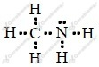
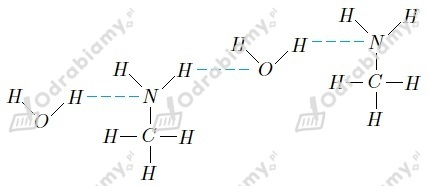
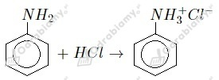

Wzór elektronowy metyloaminy:

a) liczba elektronów tworzących wiązania - 12
b) liczba elektronów niewiążących - 2
c) liczba wiązań typu σ - 6
d) liczba wiązań typu 𝜋 - 0
Schemat tworzenia wiązań wodorowych:

a) Anilina jest aminą aromatyczną, zaś metyloamina alifatyczną.
b) Anilina jest cieczą, zaś metyloamina gazem.
c) Zarówno anilina jak i metyloamina mają zapach zepsutych ryb.
d) Anilina słabo rozpuszcza się w wodzie, zaś metyloamina rozpuszcza się bardzo dobrze.
Prawidłowa kolejność wraz z rosnącym charakterem zasadowym:
kwas octowy, woda, anilina, metyloamina, amoniak
Ze względu na obecność niewiążącej pary elektronowej przy atomie azotu, metyloamina może w reakcjach przyłączać proton, pełniąc tym samym rolę zasady.
a) reakcja z wodą:
b) reakcja z kwasem solnym:
a)

b)
c)
1.
2.
3.
4.
Równanie reakcji:
Zaczynamy od obliczenia masy HCl w jego roztworze:
Z równania reakcji widzimy, że stosunek molowy substratów wynosi 1:1. Masa molowa HCl to 36,5 g/mol. Liczymy, ile gramów aniliny wzięło udział w reakcji:
Odpowiedź: W reakcji udział wzięło 61,2 gram aniliny.